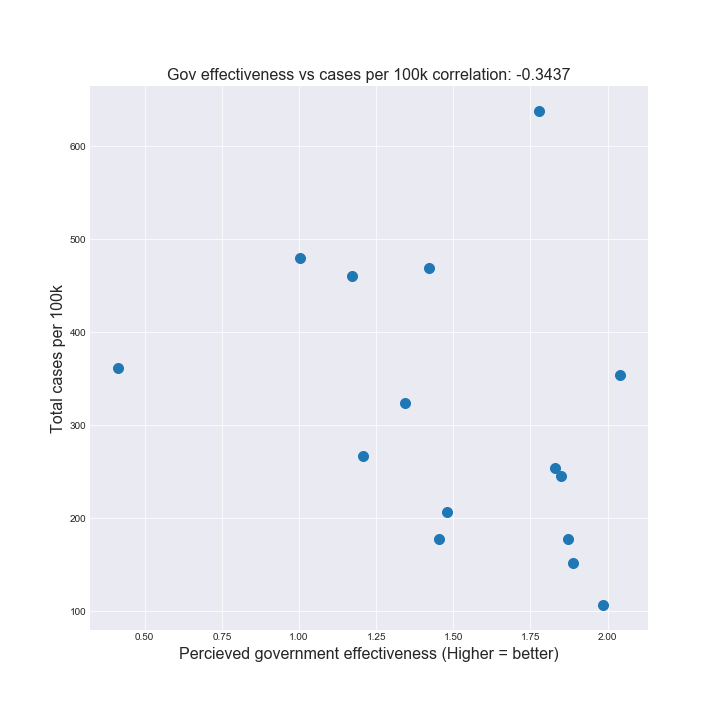

Covid-19 has been the headline for 2020. No matter where you are in the world you are, the Covid-19 pandemic has most certainly affected your daily life in some way, although some countries are more severely impacted than others. In this data analysis we explore some possible factors that may very well have influenced the spread of the virus either speeding it up or slowing it down. The data analysis is focused on western Europe, as this region has a lot of available data, as well as having some considerable differences in severity of the covid-19 impact across the region.

Covid-19 originated in China and was first discovered in december 2019. From there it has quickly spread, reaching europe in February 2020, and officially advancing to pandemic status in March.
Europe is also affected by the covid-19, and almost every country in europe is hit by the virus to a pretty big degree, standing above other european countries we have Great Britain, Ireland, Belgium, Luxembourg, Spain, Portugal and Italy. They all have a lot of trouble containing the disease, and have all seen a lot of cases in their countries. We are going to be looking into what might be the cause of some of these elevated numbers, and why exactly these countries are hit harder than the rest. We are going to focus on Italy and Spain as our main countries of interest.
Here we compare the countries in terms of deaths and cases to see who is doing well and who is doing less well. Here we can see the same pattern as before with Great Britain, Ireland, Belgium, Luxembourg, Spain, Portugal and Italy all having a lot of cases. Some countries however are handling the cases worse than others, Italy, Spain, Great Britain and Belgium are all having a lot of deaths compared to their cases. While luxembourg seems to be handling their cases relatively well, this could be explained by Luxembourg being a small country and maybe having better hospital capacity than others.

There have been big differences in the countermeasures taken to counteract the spread of Covid-19 from country to country, as well as how fast these have been deployed. On this graph we compare 3 European countries: Denmark, Italy and Spain with Vietnam. It is very interesting that Vietnam has had so few cases even though the first case was in January long before it even reached Europe. Vietnam was quick to close schools, cancel flights and impose quarantines. Italy and Spain however were not nearly as quick, although Italy canceled flights, they did not do anything further before the number of cases ramped up. At that point the virus had been so widely spread that the countermeasures weren't effective. Denmark however reacted faster than Italy and Spain, which shows in the number of cases.
The map above visualizes several features of the COVID-19 dataset; total deaths per 100.000 citizens, the percent of the population that is 65 years or older, how effective the government is perceived to be by the public, and finally the amount of citizens living in urban areas per 100.000 citizens. These are visualized to better see what regions are hit hardest, and features that might be related to the amount of deaths. When looking at barcharts or the like, it’s hard to see how geographically close countries might relate to each other. Making the features available on the map allows you to compare some key features that might or might not affect the death rate of COVID-19.
There are many statistics that make up a country, we have selected 3 here that we thought were interesting to highlight. We explored tourism for a while, thinking that it might have a big influence on the spread of corona, however looking at the data there seems to be little to no correlation between tourism and cases. Austria and Denmark both have a lot of tourism, but both of these countries are not seeing that many cases. We also explored the amount of people in countries above the age of 65 and Urbanization, but as can be seen from the plot, there is not a huge difference between the different european countries especially in terms of aging population, so it’s hard to find a big correlation here.
Government effectiveness is defined as such: “Perceptions of the quality of public services, the quality of the civil service and the degree of its independence from political pressures, the quality of policy formulation and implementation, and the credibility of the government's commitment to such policies.”. The value represents the overall perception of the government, from the perspective of the people. The higher the value, the more effective the government is percieved to be. In the above plot, we see a clear negative correlation between the effectiveness of the government, and how many cases of COVID-19 is reported. Thus, the more effective the government, the fewer cases reported. This might be due to the fact, that the perception of effectiveness matters almost as much as the actual effectiveness. After all, a population might not heed the warnings and guidelines proposed by a government that it simply does not consider effective.

The feature ‘Living at home’, is defined as such: The % of the adults between 25-35 years old, who live with their parents. There also seems to be a signigicant correlation between these two. In especially Spain and Italy +25 year olds tend to live longer with their parents (+40%), compared to Nordic countries such as Denmark (4%) and Finland (4%). In reality, this means that an adult who lives with his parents is much more likely to spread the virus, as he or she might be in contact with one or more parents daily. As has been established, Italy and Spain have been hit excessively hard during the COVID-19 crisis, and this might shed some light on why the virus spreads faster there, than in the Nordic countries.
Tourism might very well have been the spark that started the crisis in Europe. As seen in the graph, however, we find little correlation in Europe, of a link between the spread of the virus and the degree of tourists per 100k citizens. On a worldwide basis, however, the correlation is much stronger, but in Europe it remains relatively weak.
Urban population per 100k is very much what it sounds like; a measurement of the degree to which a country has been urbanized. Here, the intuition is that the more urbanized a country = the more close people live together = the more the virus spreads. There is a small-medium correlation here, in that countries with higher degrees of urbanized populations experience higher reported cases, but the link is not very strong.
Several strong correlations exists between the reported amount of cases per 100k, and the presented features. However, as correlation is not equal causation, we cannot conclude that either one of these features lead directly to higher infection-rate of the virus. The correlation can, however, point in the direction of where there might be causation.
Magnus Peter Eilersen (s144210)
Martin Alexander Wiesner Krøll (s153455)
Mads Fjederholt (s162889)
Explainer notebook